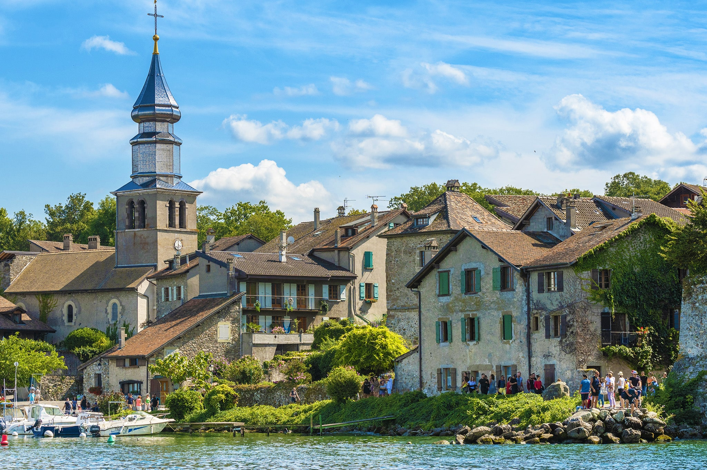
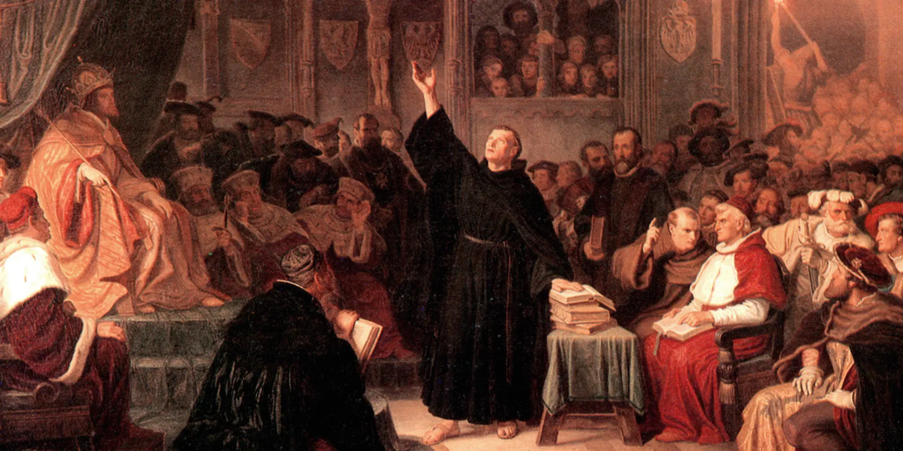
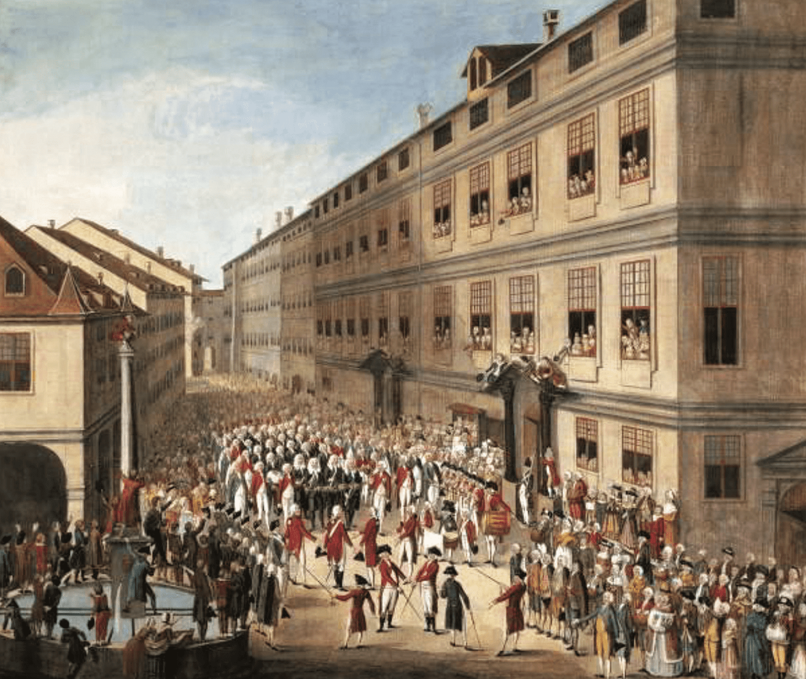
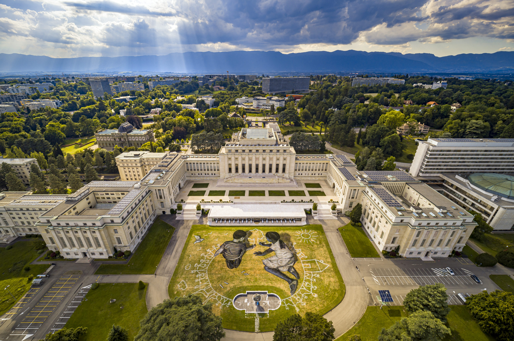

Geneva has a rich and complex history that spans over 2,000 years, marked by its strategic location, political significance, and cultural development. Here’s a brief overview of the key historical milestones in Geneva:
Ancient and Medieval Periods
Geneva was originally settled by the Celtic tribe known as the Allobroges and later became a Roman outpost known as Genava around 121 BC. The Romans recognized its strategic position along trade routes.
By the 4th century, Geneva had become an important Christian center. It was during this time that the first bishop of Geneva was appointed, further establishing the city’s significance in the region.
In the Middle Ages, Geneva gained independence from the control of the Holy Roman Empire and became a free city in the 13th century. It was ruled by the House of Savoy and later became a center for trade and commerce.
Lake Geneva
Geneva played a crucial role in the Protestant Reformation, particularly under the leadership of John Calvin, who established the city as a center for Calvinism. Calvin’s influence transformed Geneva into a hub for Protestant thought and religious tolerance.
The city declared itself a republic in 1536, establishing a unique political system characterized by a degree of religious tolerance and civic participation.
The 18th and 19th Centuries
The late 18th century saw conflicts, including the Geneva Revolution of 1782, which led to the temporary restoration of the republic after foreign influence from France and the surrounding regions.
Following the Congress of Vienna, Geneva became part of the Swiss Confederation, further solidifying its position as a neutral and independent city-state.
20th Century to Present
During both World Wars, Geneva maintained its neutrality. After World War I, it became the headquarters of the League of Nations, emphasizing its role in international diplomacy.
Post-World War II, Geneva continued to grow as a center for international diplomacy, hosting various organizations, including the United Nations Office and the International Red Cross.
Today, Geneva is known as the “Capital of Peace”, reflecting its longstanding commitment to diplomacy, human rights, and humanitarian efforts. The city is also recognized for its high quality of life, cultural diversity, and role in global finance.
Conclusion
Geneva’s history is a tapestry of political change, religious transformation, and cultural development. From its ancient roots as a Roman settlement to its current status as a hub for international diplomacy, Geneva has played a significant role in shaping regional and global history.